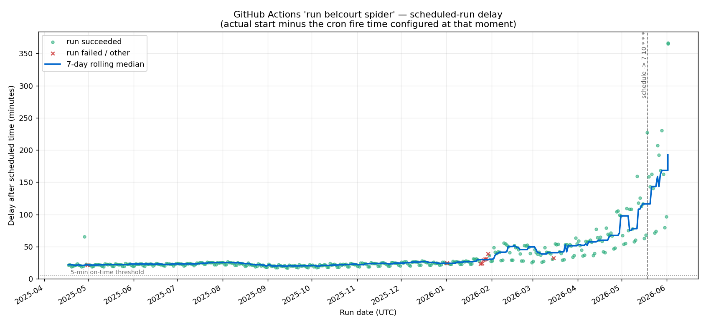

For the past several weeks I’ve noticed that many of the Github Actions I have running on a schedule have been running hours (!) behind. As an example, here you can see the delays in the scheduled workflow powering my Belcourt showtimes screen:

In February, the delays start growing practically exponentially. In May, I tried updating the schedule so it runs at the 7th minute instead of top of the hour to try to avoid the back-up that can occur at the 0th minute, but it made no difference.
A quick google shows that many other people are complaining about this too, and there’s not really any solution other than taking your cron jobs elsewhere. I saw a few people suggest cron-job.org as a third-party alternative, so I gave it a try. It was super easy to set up and is totally free!
Step 1: Create a Github Personal Access Token
- Go to GitHub → Settings → Developer settings → Fine-grained tokens → Generate new token
- Set:
- Token name
- Expiration (you’ll need to regenerate and update cron-job.org when it expires, or the trigger silently stops firing)
- Repository access: Only select repositories (ideally you’d have a separate PAT per repo)
- Permissions → Repository permissions → Actions: set to Read and write
- Generate it and copy the token
Step 2: Create the cron job on cron-job.org
- Sign up / log in at https://cron-job.org
- Click “Create cronjob”
- Configure the settings. You can see the required settings at Github’s documentation:
- URL:
https://api.github.com/repos/{owner}/{repo}/actions/workflows/{workflow_id}/dispatches - Schedule: Set timezone and configure the schedule you want. cron-job.org can run up to once a minute
- Expand Advanced settings:
- Request method: POST
- Headers (
Key:Value):Accept:application/vnd.github+jsonAuthorization:Bearer github_pat_...(your token from Step 1)X-GitHub-Api-Version:2026-03-10Content-Type:application/json
- Request body:
{"ref":"main"}
- Save.
Step 3: Verify
You can then click “Test Run” to test the connection. If you get 200 response code, you’re golden. You can also see the job in progress in Github Actions
Conclusion
Github’s recent issues with downtime are well-documented, though the causes are not entirely clear. It’s bad enough that Github has had to release their own (vague) statements of apology. It’s a sorry state of affairs for a key pillar of the open-source ecosystem.